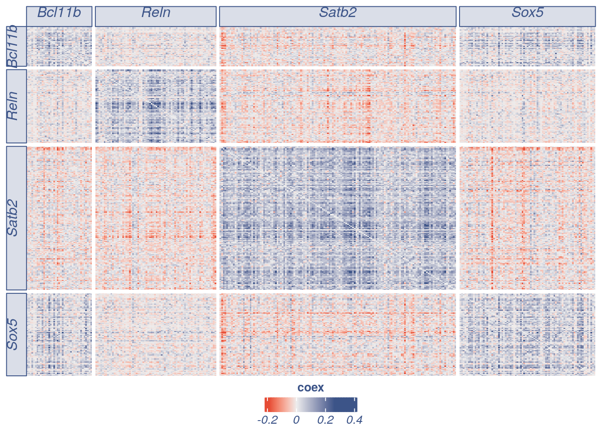
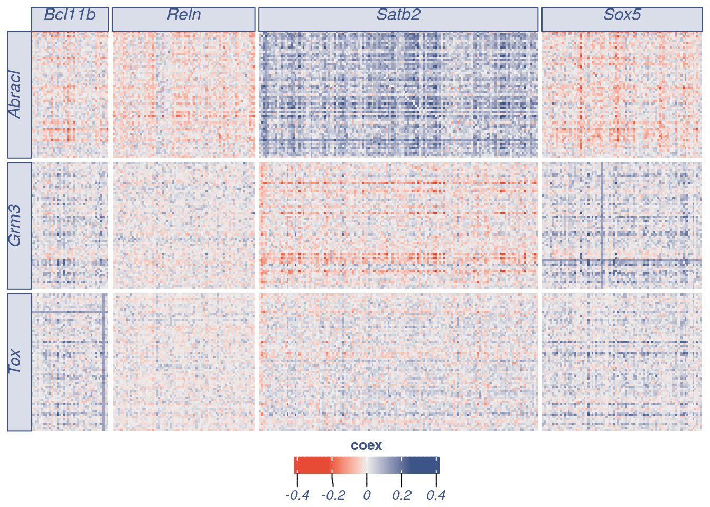
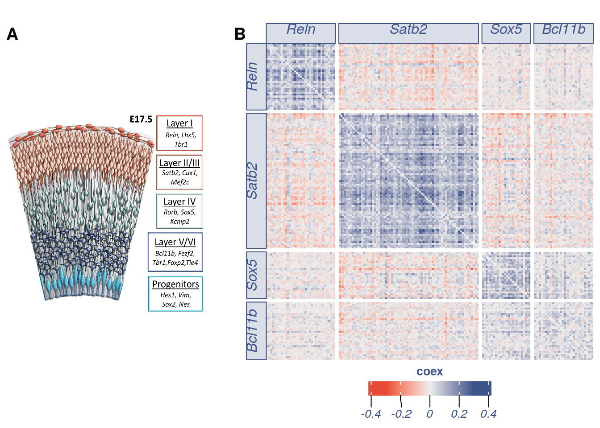

library(COTAN)
library(ggplot2)
library(ComplexHeatmap)
#> Loading required package: grid
#> ========================================
#> ComplexHeatmap version 2.6.2
#> Bioconductor page: http://bioconductor.org/packages/ComplexHeatmap/
#> Github page: https://github.com/jokergoo/ComplexHeatmap
#> Documentation: http://jokergoo.github.io/ComplexHeatmap-reference
#>
#> If you use it in published research, please cite:
#> Gu, Z. Complex heatmaps reveal patterns and correlations in multidimensional
#> genomic data. Bioinformatics 2016.
#>
#> This message can be suppressed by:
#> suppressPackageStartupMessages(library(ComplexHeatmap))
#> ========================================
library(circlize)
#> ========================================
#> circlize version 0.4.12
#> CRAN page: https://cran.r-project.org/package=circlize
#> Github page: https://github.com/jokergoo/circlize
#> Documentation: https://jokergoo.github.io/circlize_book/book/
#>
#> If you use it in published research, please cite:
#> Gu, Z. circlize implements and enhances circular visualization
#> in R. Bioinformatics 2014.
#>
#> This message can be suppressed by:
#> suppressPackageStartupMessages(library(circlize))
#> ========================================
library(cowplot)The general heatmap can be done by the automatic function or extracting the information. In the first case we can plot a simmetric plot or an asymmetric one.
gen.heatmap = plot_general.heatmap(prim.markers = c("Reln","Satb2","Sox5","Bcl11b"),dir = input_dir,condition = "E17_cortex_cl2",p_value = 0.001,symmetric = T)
#> [1] "ploting a general heatmap"
#> [1] "Reln" "Satb2" "Sox5" "Bcl11b"
#> [1] "Get p-values on a set of genes on columns genome wide on rows"
#> [1] "Using function S"
#> [1] "function to generate S "
gen.heatmap = plot_general.heatmap(prim.markers = c("Reln","Satb2","Sox5","Bcl11b"),markers.list =c("Grm3","Abracl","Tox") ,dir = input_dir,condition = "E17_cortex_cl2",p_value = 0.001,symmetric = F)
#> [1] "ploting a general heatmap"
#> [1] "Grm3" "Abracl" "Tox" "Reln" "Satb2" "Sox5" "Bcl11b"
#> [1] "Get p-values on a set of genes on columns genome wide on rows"
#> [1] "Using function S"
#> [1] "function to generate S "
obj17 = readRDS(file = paste(input_dir,"E17_cortex_cl2.cotan.RDS", sep = ""))
p_value_17 = get.pval(object = obj17,gene.set.col = c("Satb2","Bcl11b","Sox5","Reln"))
#> [1] "Satb2" "Bcl11b" "Sox5" "Reln"
#> [1] "Get p-values on a set of genes on columns genome wide on rows"
#> [1] "Using function S"
#> [1] "function to generate S "
p_value_17 = as.data.frame(as.matrix(p_value_17))
obj17@coex = Matrix::forceSymmetric(obj17@coex, uplo="L" )
coex_17 = as.data.frame(as.matrix(obj17@coex[,colnames(obj17@coex) %in% c("Satb2","Bcl11b","Sox5","Reln")]))pos.link.Satb2 = rownames(p_value_17[p_value_17$Satb2 < 0.0001,])[rownames(p_value_17[p_value_17$Satb2 < 0.0001,]) %in% rownames(coex_17[coex_17$Satb2 > 0,])]
pos.link.Bcl11b = rownames(p_value_17[p_value_17$Bcl11b < 0.001,])[rownames(p_value_17[p_value_17$Bcl11b < 0.001,]) %in% rownames(coex_17[coex_17$Bcl11b > 0,])]
pos.link.Reln = rownames(p_value_17[p_value_17$Reln < 0.0001,])[rownames(p_value_17[p_value_17$Reln < 0.0001,]) %in% rownames(coex_17[coex_17$Reln > 0,])]
pos.link.Sox5 = rownames(p_value_17[p_value_17$Sox5 < 0.0001,])[rownames(p_value_17[p_value_17$Sox5 < 0.0001,]) %in% rownames(coex_17[coex_17$Sox5 > 0,])]
cl.genes = data.frame("gene"=pos.link.Reln,"cl"="Reln")
cl.genes = rbind(cl.genes,data.frame("gene"=pos.link.Satb2,"cl"="Satb2"),data.frame("gene"=pos.link.Sox5,"cl"="Sox5"),
data.frame("gene"=pos.link.Bcl11b,"cl"="Bcl11b"))
cl.genes$gene = as.vector(cl.genes$gene)
length(c(pos.link.Bcl11b,pos.link.Reln,pos.link.Sox5,pos.link.Satb2))
#> [1] 184This is the number of total secondary markers extracted.
dupl.genes = c(pos.link.Bcl11b,pos.link.Reln,pos.link.Sox5,pos.link.Satb2)[duplicated(c(pos.link.Bcl11b,pos.link.Reln,pos.link.Sox5,pos.link.Satb2))]
all.genes.to.plot = c(pos.link.Reln,pos.link.Satb2,pos.link.Bcl11b,pos.link.Sox5)
all.genes.to.plot = all.genes.to.plot[!all.genes.to.plot %in% dupl.genes]
cl.genes= cl.genes[!cl.genes$gene %in% dupl.genes,]
paste0("Duplicated genes: ",length(unique(dupl.genes))," Plotted genes: ",length(all.genes.to.plot))
#> [1] "Duplicated genes: 7 Plotted genes: 170"coex_17.2 = as.data.frame(as.matrix(obj17@coex[rownames(coex_17) %in% all.genes.to.plot,colnames(obj17@coex) %in% all.genes.to.plot]))
cl.genes = cl.genes[cl.genes$gene %in% colnames(coex_17.2),]
reorder_idx_col <- match(cl.genes$gene,colnames(coex_17.2))
reorder_idx_row <- match(cl.genes$gene,rownames(coex_17.2))
to.plot <- coex_17.2[reorder_idx_row,reorder_idx_col]
diag(to.plot) = 0
rg = max(c(abs(c(round(quantile(as.matrix(to.plot),probs =0.001),digits = 1))), 0, round(quantile(as.matrix(to.plot),probs =0.999),digits = 1)))
col_fun = colorRamp2(c(-rg, 0, rg), c("#E64B35FF", "gray93", "#3C5488FF"))
#col_fun = colorRamp2(c(-0.4, 0, +0.4), c("#E64B35FF", "gray93", "#3C5488FF"))
#The next line is to set the columns and raws order
cl.genes$cl =factor(cl.genes$cl,c("Reln","Satb2","Sox5","Bcl11b"))
part1 = Heatmap(as.matrix(to.plot),cluster_rows = FALSE, cluster_columns = F ,row_split = cl.genes$cl, column_split = cl.genes$cl ,col = col_fun, show_row_names = FALSE, show_column_names = F, column_title_gp = gpar(fill = "#8491B44C", font = 3, col= "#3C5488FF"),row_title_gp = gpar(fill = "#8491B44C",font = 3, col= "#3C5488FF"))#, heatmap_legend_param = list(title = "coex" )
lgd = Legend(col_fun = col_fun, title = "coex",grid_width = unit(0.3, "cm"),direction = "horizontal", title_position = "topcenter",title_gp = gpar(fontsize = 10, fontface = "bold",col="#3C5488FF"),labels_gp = gpar(col = "#3C5488FF", font = 3) )
#part1 = draw(part1,show_heatmap_legend = FALSE, annotation_legend_list = lgd,annotation_legend_side = "bottom") #ht_gap = unit(7, "mm"), row_km = 2,
require(png)
#> Loading required package: png
img<-readPNG("prova_layers.png")
gb = grid.grabExpr(draw(part1,
show_heatmap_legend = FALSE,
annotation_legend_list = lgd,annotation_legend_side = "bottom"))
gb2 = grid.grabExpr(grid.raster(img, 0.5, .5, width=0.95))
fig2_part1 = ggdraw() +
draw_plot(gb2, x = .0, y = 0, width = .35, height = 1) +
draw_plot(gb, x = .4, y = 0.01, width = .60, height = 0.95) +
draw_plot_label(label = c("A", "B"), size = 14,
x = c(0, 0.38), y = c(0.95, 0.95))
fig2_part1
sessionInfo()
#> R version 4.0.4 (2021-02-15)
#> Platform: x86_64-pc-linux-gnu (64-bit)
#> Running under: Ubuntu 18.04.5 LTS
#>
#> Matrix products: default
#> BLAS: /usr/lib/x86_64-linux-gnu/openblas/libblas.so.3
#> LAPACK: /usr/lib/x86_64-linux-gnu/libopenblasp-r0.2.20.so
#>
#> locale:
#> [1] LC_CTYPE=en_US.UTF-8 LC_NUMERIC=C
#> [3] LC_TIME=en_US.UTF-8 LC_COLLATE=en_US.UTF-8
#> [5] LC_MONETARY=en_US.UTF-8 LC_MESSAGES=en_US.UTF-8
#> [7] LC_PAPER=en_US.UTF-8 LC_NAME=C
#> [9] LC_ADDRESS=C LC_TELEPHONE=C
#> [11] LC_MEASUREMENT=en_US.UTF-8 LC_IDENTIFICATION=C
#>
#> attached base packages:
#> [1] grid stats graphics grDevices utils datasets methods
#> [8] base
#>
#> other attached packages:
#> [1] png_0.1-7 cowplot_1.1.1 circlize_0.4.12
#> [4] ComplexHeatmap_2.6.2 ggplot2_3.3.3 COTAN_0.1.0
#>
#> loaded via a namespace (and not attached):
#> [1] ggrepel_0.9.1 Rcpp_1.0.6 lattice_0.20-41
#> [4] tidyr_1.1.2 assertthat_0.2.1 digest_0.6.27
#> [7] utf8_1.2.1 R6_2.5.0 stats4_4.0.4
#> [10] evaluate_0.14 highr_0.8 pillar_1.5.1
#> [13] basilisk_1.2.1 GlobalOptions_0.1.2 rlang_0.4.10
#> [16] jquerylib_0.1.3 S4Vectors_0.28.1 GetoptLong_1.0.5
#> [19] Matrix_1.3-2 reticulate_1.18 rmarkdown_2.7
#> [22] labeling_0.4.2 stringr_1.4.0 munsell_0.5.0
#> [25] compiler_4.0.4 xfun_0.22 pkgconfig_2.0.3
#> [28] BiocGenerics_0.36.0 shape_1.4.5 htmltools_0.5.1.1
#> [31] tidyselect_1.1.0 tibble_3.1.0 IRanges_2.24.1
#> [34] matrixStats_0.58.0 fansi_0.4.2 withr_2.4.1
#> [37] crayon_1.4.0 dplyr_1.0.4 rappdirs_0.3.3
#> [40] basilisk.utils_1.2.2 jsonlite_1.7.2 gtable_0.3.0
#> [43] lifecycle_1.0.0 DBI_1.1.1 magrittr_2.0.1
#> [46] scales_1.1.1 stringi_1.5.3 farver_2.1.0
#> [49] bslib_0.2.4 ellipsis_0.3.1 filelock_1.0.2
#> [52] generics_0.1.0 vctrs_0.3.6 rjson_0.2.20
#> [55] RColorBrewer_1.1-2 tools_4.0.4 Cairo_1.5-12.2
#> [58] glue_1.4.2 purrr_0.3.4 parallel_4.0.4
#> [61] yaml_2.2.1 clue_0.3-58 colorspace_2.0-0
#> [64] cluster_2.1.1 knitr_1.31 sass_0.3.1